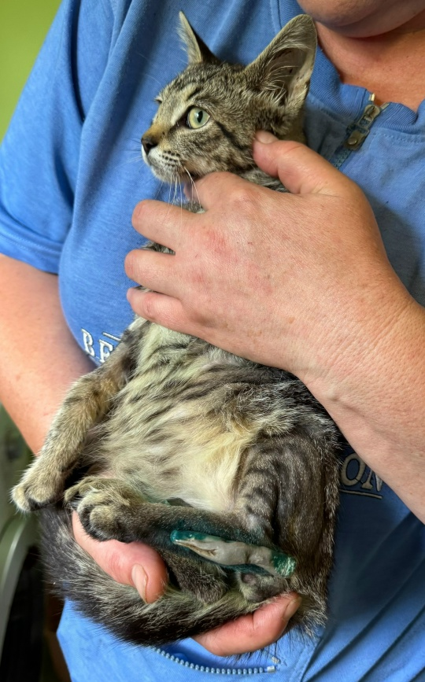
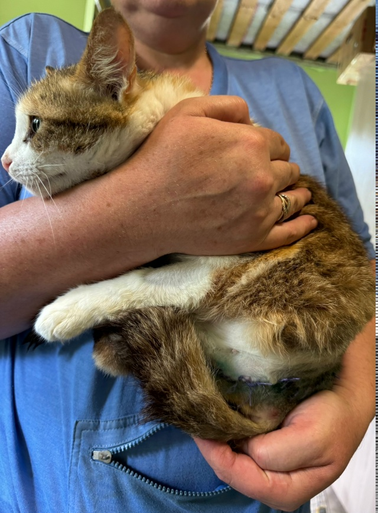
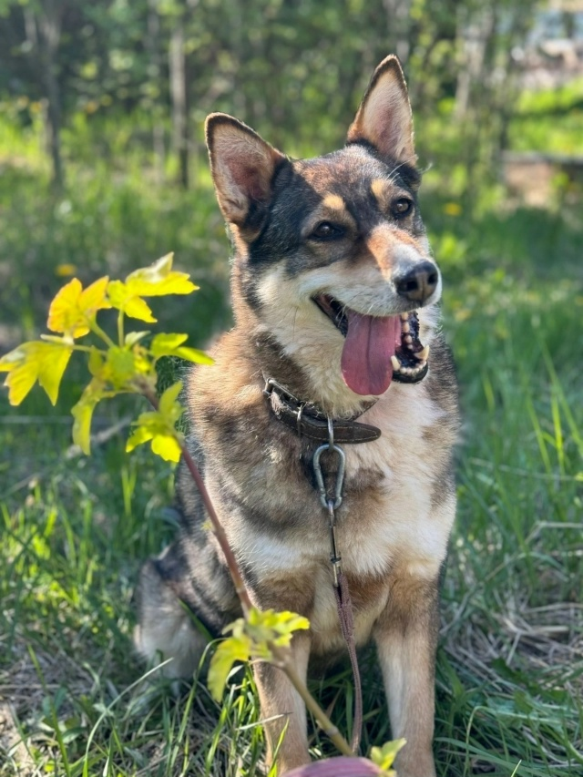
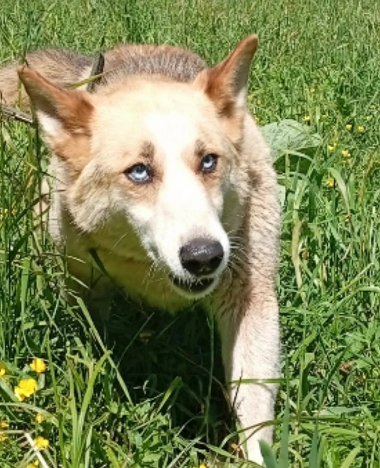
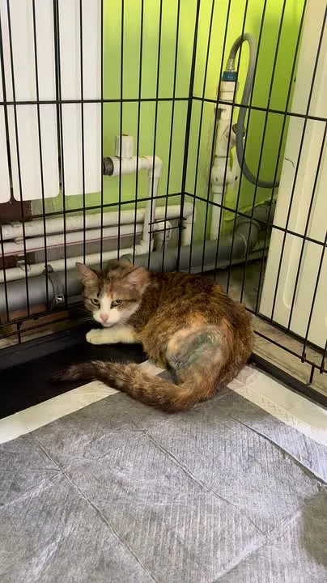

🏥 Новости приютского лазарета
Сегодня мы хотим поделиться с вами новостями о тех, кого мы представляли вам новыми жителями в критическом состоянии, и расскажем, как они сейчас себя чувствуют.
Котик Лапик. Малыш приехал к нам в критическом состоянии, с болтающейся передней лапой и сломанной задней. По анализам крови — анемия. Мы стабилизировали состояние, но до операции по сращиванию задней лапки понадобилось переливание крови. Почётным донором выступил Крашик. Операцию провели, закрепив заднюю лапку спицами, и малыш уже наступает на неё. Аппетит отменный, дикость потихоньку уходит — сейчас он с удовольствием сидит на ручках и мурчит. Можно сказать, что у нас всё получилось, и Лапик будет жить. Надеемся, он обязательно найдёт своего человека.
Кошка Ульяна. Эта кошечка оказалась настоящим бойцом, и уже сейчас можно сказать, что у неё будет всё хорошо. Ульянка научилась ходить на трёх лапах. И ура, ура, ура — у неё возвращается самостоятельное мочеиспускание, и это нас очень радует. Аппетит отличный, сейчас она уже не представляет из себя скелет, обтянутый кожей, с ввалившимися глазами.
Собачка Камилла. Вы, наверняка, помните, что мы оперировали Каму, удаляя у неё образования на задних лапах. И вот мы дождались ответа гистологии, и он нас радует — у Камы гемангиома, а это доброкачественное образование. Хорошие новости!
Собака Миранда. А вот у Миранды не так всё хорошо. Результат гистологии печальный — саркома мягких тканей, но мы не будем опускать руки, уже совсем скоро едем на КТ. Необходимо оценить, в каком состоянии внутренние органы, и решать, каким путём двигаться дальше. Миранда ещё совсем молодая и очень ласковая, добрая и жизнелюбивая собака — нужно обязательно испробовать все шансы.
Дорогие наши, мы благодарим вас всех за помощь нашему приюту. Спасибо вам за то, что мы можем лечить и заботиться о наших постояльцах. Спасибо, дорогие, за вашу бесценную помощь.